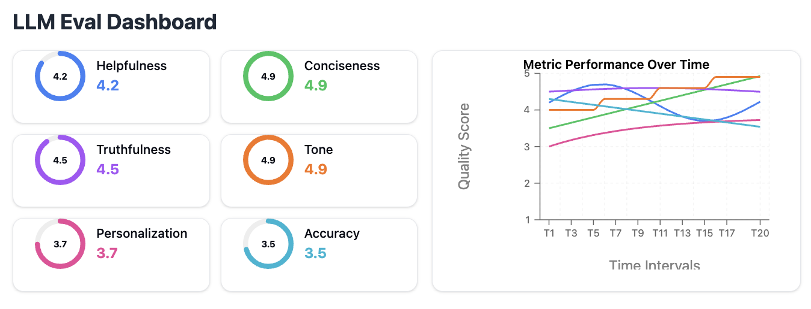
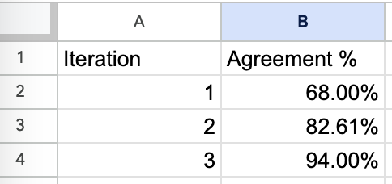

graph TB
A[Start] --> B[1 Find Principal Domain Expert]
B --> C[2 Create Dataset]
C --> D[3 Domain Expert Reviews Data]
D --> E{Found Errors?}
E -->|Yes| F[4 Fix Errors]
F --> D
E -->|No| G[5 Build LLM Judge]
G --> H[Test Against Domain Expert]
H --> I{Acceptable Agreement?}
I -->|No| J[Refine Prompt]
J --> H
I -->|Yes| K[6 Perform Error Analysis]
K --> L{Critical Issues Found?}
L -->|Yes| M[7 Fix Issues & Create Specialized Judges]
M --> D
L -->|No| N[Material Changes or Periodic Review?]
N -->|Yes| C
Using LLM-as-a-Judge For Evaluation: A Complete Guide
LLMs
evals
A step-by-step guide with my learnings from 30+ AI implementations.
Earlier this year, I wrote Your AI product needs evals. Many of you asked, “How do I get started with LLM-as-a-judge?” This guide shares what I’ve learned after helping over 30 companies set up their evaluation systems.
The Problem: AI Teams Are Drowning in Data
Ever spend weeks building an AI system, only to realize you have no idea if it’s actually working? You’re not alone. I’ve noticed teams repeat the same mistakes when using LLMs to evaluate AI outputs:
- Too Many Metrics: Creating numerous measurements that become unmanageable.
- Arbitrary Scoring Systems: Using uncalibrated scales (like 1-5) across multiple dimensions, where the difference between scores is unclear and subjective. What makes something a 3 versus a 4? Nobody knows, and different evaluators often interpret these scales differently.
- Ignoring Domain Experts: Not involving the people who understand the subject matter deeply.
- Unvalidated Metrics: Using measurements that don’t truly reflect what matters to the users or the business.
The result? Teams end up buried under mountains of metrics or data they don’t trust and can’t use. Progress grinds to a halt. Everyone gets frustrated.
For example, it’s not uncommon for me to see dashboards that look like this:

Tracking a bunch of scores on a 1-5 scale is often a sign of a bad eval process (I’ll discuss why later). In this post, I’ll show you how to avoid these pitfalls. The solution is to use a technique that I call “Critique Shadowing”. Here’s how to do it, step by step.
Step 1: Find The Principal Domain Expert
In most organizations there is usually one (maybe two) key individuals whose judgment is crucial for the success of your AI product. These are the people with deep domain expertise or represent your target users. Identifying and involving this Principal Domain Expert early in the process is critical.
Why is finding the right domain expert so important?
They Set the Standard: This person not only defines what is acceptable technically, but also helps you understand if you’re building something users actually want.
Capture Unspoken Expectations: By involving them, you uncover their preferences and expectations, which they might not be able to fully articulate upfront. Through the evaluation process, you help them clarify what a “passable” AI interaction looks like.
Consistency in Judgment: People in your organization may have different opinions about the AI’s performance. Focusing on the principal expert ensures that evaluations are consistent and aligned with the most critical standards.
Sense of Ownership: Involving the expert gives them a stake in the AI’s development. They feel invested because they’ve had a hand in shaping it. In the end, they are more likely to approve of the AI.
Examples of Principal Domain Experts:
- A psychologist for a mental health AI assistant.
- A lawyer for an AI that analyzes legal documents.
- A customer service director for a support chatbot.
- A lead teacher or curriculum developer for an educational AI tool.
NoteExceptions
In a smaller company, this might be the CEO or founder. If you are an independent developer, you should be the domain expert (but be honest with yourself about your expertise).
If you must rely on leadership, you should regularly validate their assumptions against real user feedback.
Many developers attempt to act as the domain expert themselves, or find a convenient proxy (ex: their superior). This is a recipe for disaster. People will have varying opinions about what is acceptable, and you can’t make everyone happy. What’s important is that your principal domain expert is satisfied.
Remember: This doesn’t have to take a lot of the domain expert’s time. Later in this post, I’ll discuss how you can make the process efficient. Their involvement is absolutely critical to the AI’s success.
Next Steps
Once you’ve found your expert, we need to give them the right data to review. Let’s talk about how to do that next.
Step 2: Create a Dataset
With your principal domain expert on board, the next step is to build a dataset that captures problems that your AI will encounter. It’s important that the dataset is diverse and represents the types of interactions that your AI will have in production.
Why a Diverse Dataset Matters
- Comprehensive Testing: Ensures your AI is evaluated across a wide range of situations.
- Realistic Interactions: Reflects actual user behavior for more relevant evaluations.
- Identifies Weaknesses: Helps uncover areas where the AI may struggle or produce errors.
Dimensions for Structuring Your Dataset
You want to define dimensions that make sense for your use case. For example, here are ones that I often use for B2C applications:
- Features: Specific functionalities of your AI product.
- Scenarios: Situations or problems the AI may encounter and needs to handle.
- Personas: Representative user profiles with distinct characteristics and needs.
Examples of Features, Scenarios, and Personas
Features
| Feature | Description |
|---|---|
| Email Summarization | Condensing lengthy emails into key points. |
| Meeting Scheduler | Automating the scheduling of meetings across time zones. |
| Order Tracking | Providing shipment status and delivery updates. |
| Contact Search | Finding and retrieving contact information from a database. |
| Language Translation | Translating text between languages. |
| Content Recommendation | Suggesting articles or products based on user interests. |
Scenarios
Scenarios are situations the AI needs to handle, (not based on the outcome of the AI’s response).
| Scenario | Description |
|---|---|
| Multiple Matches Found | User’s request yields multiple results that need narrowing down. For example: User asks “Where’s my order?” but has three active orders (#123, #124, #125). AI must help identify which specific order they’re asking about. |
| No Matches Found | User’s request yields no results, requiring alternatives or corrections. For example: User searches for order #ABC-123 which doesn’t exist. AI should explain valid order formats and suggest checking their confirmation email. |
| Ambiguous Request | User input lacks necessary specificity. For example: User says “I need to change my delivery” without specifying which order or what aspect of delivery (date, address, etc.) they want to change. |
| Invalid Data Provided | User provides incorrect data type or format. For example: User tries to track a return using a regular order number instead of a return authorization (RMA) number. |
| System Errors | Technical issues prevent normal operation. For example: While looking up an order, the inventory database is temporarily unavailable. AI needs to explain the situation and provide alternatives. |
| Incomplete Information | User omits required details. For example: User wants to initiate a return but hasn’t provided the order number or reason. AI needs to collect this information step by step. |
| Unsupported Feature | User requests functionality that doesn’t exist. For example: User asks to change payment method after order has shipped. AI must explain why this isn’t possible and suggest alternatives. |
Personas
| Persona | Description |
|---|---|
| New User | Unfamiliar with the system; requires guidance. |
| Expert User | Experienced; expects efficiency and advanced features. |
| Non-Native Speaker | May have language barriers; uses non-standard expressions. |
| Busy Professional | Values quick, concise responses; often multitasking. |
| Technophobe | Uncomfortable with technology; needs simple instructions. |
| Elderly User | May not be tech-savvy; requires patience and clear guidance. |
This taxonomy is not universal
This taxonomy (features, scenarios, personas) is not universal. For example, it may not make sense to even have personas if users aren’t directly engaging with your AI. The idea is you should outline dimensions that make sense for your use case and generate data that covers them. You’ll likely refine these after the first round of evaluations.
Generating Data
To build your dataset, you can:
- Use Existing Data: Sample real user interactions or behaviors from your AI system.
- Generate Synthetic Data: Use LLMs to create realistic user inputs covering various features, scenarios, and personas.
Often, you’ll do a combination of both to ensure comprehensive coverage. Synthetic data is not as good as real data, but it’s a good starting point. Also, we are only using LLMs to generate the user inputs, not the LLM responses or internal system behavior.
Regardless of whether you use existing data or synthetic data, you want good coverage across the dimensions you’ve defined.
Incorporating System Information
When making test data, use your APIs and databases where appropriate. This will create realistic data and trigger the right scenarios. Sometimes you’ll need to write simple programs to get this information. That’s what the “Assumptions” column is referring to in the examples below.
Example LLM Prompts for Generating User Inputs
Here are some example prompts that illustrate how to use an LLM to generate synthetic user inputs for different combinations of features, scenarios, and personas:
| ID | Feature | Scenario | Persona | LLM Prompt to Generate User Input | Assumptions (not directly in the prompt) |
|---|---|---|---|---|---|
| 1 | Order Tracking | Invalid Data Provided | Frustrated Customer | “Generate a user input from someone who is clearly irritated and impatient, using short, terse language to demand information about their order status for order number #1234567890. Include hints of previous negative experiences.” | Order number #1234567890 does not exist in the system. |
| 2 | Contact Search | Multiple Matches Found | New User | “Create a user input from someone who seems unfamiliar with the system, using hesitant language and asking for help to find contact information for a person named ‘Alex’. The user should appear unsure about what information is needed.” | Multiple contacts named ‘Alex’ exist in the system. |
| 3 | Meeting Scheduler | Ambiguous Request | Busy Professional | “Simulate a user input from someone who is clearly in a hurry, using abbreviated language and minimal details to request scheduling a meeting. The message should feel rushed and lack specific information.” | N/A |
| 4 | Content Recommendation | No Matches Found | Expert User | “Produce a user input from someone who demonstrates in-depth knowledge of their industry, using specific terminology to request articles on sustainable supply chain management. Use the information in this article involving sustainable supply chain management to formulate a plausible query: {{article}}” | No articles on ‘Emerging trends in sustainable supply chain management’ exist in the system. |
Generating Synthetic Data
When generating synthetic data, you only need to create the user inputs. You then feed these inputs into your AI system to generate the AI’s responses. It’s important that you log everything so you can evaluate your AI. To recap, here’s the process:
- Generate User Inputs: Use the LLM prompts to create realistic user inputs.
- Feed Inputs into Your AI System: Input the user interactions into your AI as it currently exists.
- Capture AI Responses: Record the AI’s responses to form complete interactions.
- Organize the Interactions: Create a table to store the user inputs, AI responses, and relevant metadata.
How much data should you generate?
There is no right answer here. At a minimum, you want to generate enough data so that you have examples for each combination of dimensions (in this toy example: features, scenarios, and personas). However, you also want to keep generating more data until you feel like you have stopped seeing new failure modes. The amount of data I generate varies significantly depending on the use case.
Does synthetic data actually work?
You might be skeptical of using synthetic data. After all, it’s not real data, so how can it be a good proxy? In my experience, it works surprisingly well. Some of my favorite AI products, like Hex use synthetic data to power their evals:
“LLMs are surprisingly good at generating excellent - and diverse - examples of user prompts. This can be relevant for powering application features, and sneakily, for building Evals. If this sounds a bit like the Large Language Snake is eating its tail, I was just as surprised as you! All I can say is: it works, ship it.” Bryan Bischof, Head of AI Engineering at Hex
Next Steps
With your dataset ready, now comes the most important part: getting your principal domain expert to evaluate the interactions.
Step 3: Direct The Domain Expert to Make Pass/Fail Judgments with Critiques
The domain expert’s job is to focus on one thing: “Did the AI achieve the desired outcome?” No complex scoring scales or multiple metrics. Just a clear pass or fail decision. In addition to the pass/fail decision, the domain expert should write a critique that explains their reasoning.
Why are simple pass/fail metrics important?
Clarity and Focus: A binary decision forces everyone to consider what truly matters. It simplifies the evaluation to a single, crucial question.
Actionable Insights: Pass/fail judgments are easy to interpret and act upon. They help you quickly identify whether the AI meets the user’s needs.
Forces Articulation of Expectations: When domain experts must decide if an interaction passes or fails, they are compelled to articulate their expectations clearly. This process uncovers nuances and unspoken assumptions about how the AI should behave.
Efficient Use of Resources: Keeps the evaluation process manageable, especially when starting out. You avoid getting bogged down in detailed metrics that might not be meaningful yet.
The Role of Critiques
Alongside a binary pass/fail judgment, it’s important to write a detailed critique of the LLM-generated output. These critiques:
Captures Nuances: The critique allows you to note if something was mostly correct but had areas for improvement.
Guide Improvement: Detailed feedback provides specific insights into how the AI can be enhanced.
Balance Simplicity with Depth: While the pass/fail offers a clear verdict, the critique offers the depth needed to understand the reasoning behind the judgment.
Why Write Critiques?:
In practice, domain experts may not have fully internalized all the judgment criteria. By forcing them to make a pass/fail decision and explain their reasoning, they clarify their expectations and provide valuable guidance for refining the AI.
“But my problem is complex!” Trust me—starting simple forces you to focus on what truly matters. You can introduce more complexity later if needed.
Examples of Good Critiques
To illustrate how simple pass/fail judgments combined with detailed critiques work in practice, here’s a table showcasing examples of user interactions with an AI assistant. The table includes both passes and fails, with critiques explaining why the AI received that judgment. In cases where the AI passed despite critical issues, the critique highlights these aspects and justifies why it still passed overall. For failed interactions, the critique explains the critical elements that led to the failure.
| User Interaction with AI | Judgment | Critique |
|---|---|---|
| User: “I need to cancel my flight booking for next week.” AI: “Your flight booking for next week has been canceled. A confirmation email has been sent to you.” |
Pass | The AI successfully executed the user’s request by canceling the flight and sending a confirmation, achieving the primary goal. However, it should have asked for confirmation before proceeding to prevent accidental cancellations. Despite this critical oversight, the AI fulfilled the user’s request, so it passes, but adding a confirmation step would improve user safety. |
| User: “What’s the capital of France?” AI: “The capital of France is Paris.” |
Pass | The AI correctly answered the user’s question, providing accurate information promptly. Although the response is sufficient, the AI could enhance the interaction by offering additional interesting facts or asking if the user has more questions. Despite this opportunity for added engagement, the AI met the user’s primary need, so it passes. |
| User: “I can’t log into my account; it says my password is incorrect.” AI: “Please reset your password by clicking ‘Forgot Password’.” |
Fail | The AI provided a generic solution without acknowledging the user’s frustration or checking for other issues like account lockout. It failed to offer empathetic support or additional assistance. Due to the lack of personalized help and poor user experience, it fails. |
| User: “Book a table for two at an Italian restaurant tonight at 7 PM.” AI: “Table for two at Luigi’s Italian Restaurant booked for tonight at 7 PM. Confirmation number is 12345.” |
Pass | The AI efficiently completed the booking as requested, providing all necessary details and a confirmation number. However, it could have asked if the user had seating preferences or dietary restrictions. The AI accomplished the primary task successfully, so it passes, with minor opportunities for enhanced service. |
| User: “I need help with my billing statement.” AI: “Please provide your account number and full name.” |
Fail | The AI requested sensitive information without verifying the user’s identity through secure means, potentially compromising security. It should guide the user through a secure authentication process first. Due to this critical oversight in user data protection, it fails. |
These examples demonstrate how the AI can receive both “Pass” and “Fail” judgments. In the critiques:
For passes, we explain why the AI succeeded in meeting the user’s primary need, even if there were critical aspects that could be improved. We highlight these areas for enhancement while justifying the overall passing judgment.
For fails, we identify the critical elements that led to the failure, explaining why the AI did not meet the user’s main objective or compromised important factors like user experience or security.
Most importantly, the critique should be detailed enough so that you can use it in a few-shot prompt for a LLM judge. In other words, it should be detailed enough that a new employee could understand it. Being too terse is a common mistake.
Note that the example user interactions with the AI are simplified for brevity - but you might need to give the domain expert more context to make a judgement. More on that later.
Note
At this point, you don’t need to perform a root cause analysis into the technical reasons behind why the AI failed. Many times, it’s useful to get a sense of overall behavior before diving into the weeds.
Don’t stray from binary pass/fail judgments when starting out
A common mistake is straying from binary pass/fail judgments. Let’s revisit the dashboard from earlier:

If your evaluations consist of a bunch of metrics that LLMs score on a 1-5 scale (or any other scale), you’re doing it wrong. Let’s unpack why.
- It’s not actionable: People don’t know what to do with a 3 or 4. It’s not immediately obvious how this number is better than a 2. You need to be able to say “this interaction passed because…” and “this interaction failed because…”.
- More often than not, these metrics do not matter. Every time I’ve analyzed data on domain expert judgments, they tend not to correlate with these kind of metrics. By having a domain expert make a binary judgment, you can figure out what truly matters.
This is why I hate off the shelf metrics that come with many evaluation frameworks. They tend to lead people astray.
Common Objections to Pass/Fail Judgments:
- “The business said that these 8 dimensions are important, so we need to evaluate all of them.”
- “We need to be able to say why an interaction passed or failed.”
I can guarantee you that if someone says you need to measure 8 things on a 1-5 scale, they don’t know what they are looking for. They are just guessing. You have to let the domain expert drive and make a pass/fail judgment with critiques so you can figure out what truly matters. Stand your ground here.
Make it easy for the domain expert to review data
Finally, you need to remove all friction from reviewing data. I’ve written about this here. Sometimes, you can just use a spreadsheet. It’s a judgement call in terms of what is easiest for the domain expert. I found that I often have to provide additional context to help the domain expert understand the user interaction, such as:
- Metadata about the user, such as their location, subscription tier, etc.
- Additional context about the system, such as the current time, inventory levels, etc.
- Resources so you can check if the AI’s response is correct (ex: ability to search a database, etc.)
All of this data needs to be presented on a single screen so the domain expert can review it without jumping through hoops. That’s why I recommend building a simple web app to review data.
How many examples do you need?
The number of examples you need depends on the complexity of the task. My heuristic is that I start with around 30 examples and keep going until I do not see any new failure modes. From there, I keep going until I’m not learning anything new.
Next, we’ll look at how to use this data to build an LLM judge.
Step 4: Fix Errors
After looking at the data, it’s likely you will find errors in your AI system. Instead of plowing ahead and building an LLM judge, you want to fix any obvious errors. Remember, the whole point of the LLM as a judge is to help you find these errors, so it’s totally fine if you find them earlier!
If you have already developed Level 1 evals as outlined in my previous post, you should not have any pervasive errors. However, these errors can sometimes slip through the cracks. If you find pervasive errors, fix them and go back to step 3. Keep iterating until you feel like you have stabilized your system.
Step 5: Build Your LLM as A Judge, Iteratively
Start with Expert Examples
Let me share a real-world example of building an LLM judge you can apply to your own use case. When I was helping Honeycomb build their Query Assistant feature, we needed a way to evaluate if the AI was generating good queries. Here’s what our LLM judge prompt looked like, including few-shot examples of critiques from our domain expert, Phillip:
You are a Honeycomb query evaluator with advanced capabilities to judge if a query is good or not.
You understand the nuances of the Honeycomb query language, including what is likely to be
most useful from an analytics perspective.
Here is information about the Honeycomb query language:
{{query_language_info}}
Here are some guidelines for evaluating queries:
{{guidelines}}
Example evaluations:
<examples>
<example-1>
<nlq>show me traces where ip is 10.0.2.90</nlq>
<query>
{
"breakdowns": ["trace.trace_id"],
"calculations": [{"op": "COUNT"}],
"filters": [{"column": "net.host.ip", "op": "=", "value": "10.0.2.90"}]
}
</query>
<critique>
{
"critique": "The query correctly filters for traces with an IP address of 10.0.2.90
and counts the occurrences of those traces, grouped by trace.trace_id. The response
is good as it meets the requirement of showing traces from a specific IP address
without additional complexities.",
"outcome": "good"
}
</critique>
</example-1>
<example-2>
<nlq>show me slowest trace</nlq>
<query>
{
"calculations": [{"column": "duration_ms", "op": "MAX"}],
"orders": [{"column": "duration_ms", "op": "MAX", "order": "descending"}],
"limit": 1
}
</query>
<critique>
{
"critique": "While the query attempts to find the slowest trace using MAX(duration_ms)
and ordering correctly, it fails to group by trace.trace_id. Without this grouping,
the query only shows the MAX(duration_ms) measurement over time, not the actual
slowest trace.",
"outcome": "bad"
}
</critique>
</example-2>
<example-3>
<nlq>count window-hash where window-hash exists per hour</nlq>
<query>
{
"breakdowns": ["window-hash"],
"calculations": [{"op": "COUNT"}],
"filters": [{"column": "window-hash", "op": "exists"}],
"time_range": 3600
}
</query>
<critique>
{
"critique": "While the query correctly counts window-hash occurrences, the time_range
of 3600 seconds (1 hour) is insufficient for per-hour analysis. When we say 'per hour',
we need a time_range of at least 36000 seconds to show meaningful hourly patterns.",
"outcome": "bad"
}
</critique>
</example-3>
</examples>
For the following query, first write a detailed critique explaining your reasoning,
then provide a pass/fail judgment in the same format as above.
<nlq>{{user_input}}</nlq>
<query>
{{generated_query}}
</query>
<critique>Notice how each example includes:
- The natural language query (NLQ) in
<nlq>tags - The generated query in
<query>tags - The critique and outcome in
<critique>tags
In the prompt above, the example critiques are fixed. An advanced approach is to include examples dynamically based upon the item you are judging. You can learn more in this post about Continual In-Context Learning.
Keep Iterating on the Prompt Until Convergence With Domain Expert
In this case, I used a low-tech approach to iterate on the prompt. I sent Phillip a spreadsheet with the following information:
- The NLQ
- The generated query
- The critique
- The outcome (pass or fail)
Phillip would then fill out his own version of the spreadsheet with his critiques. I used this to iteratively improve the prompt. The spreadsheet looked like this:

I also tracked agreement rates over time to ensure we were converging on a good prompt.

WarningImportant Note on Using Agreement as a Metric
In this example, we used agreement between the model and human evaluator because our dataset was roughly balanced (about 50% of instances were failures). However, using raw agreement is generally not recommended and can be misleading when classes are imbalanced. Instead, you should typically measure precision and recall separately to get a more accurate picture of your judge’s alignment.
It took us only three iterations to achieve > 90% agreement between the LLM and Phillip. Your mileage may vary depending on the complexity of the task. For example, Swyx has conducted a similar process hundreds of times for AI News, an extremely popular news aggregator with high quality recommendations. The quality of the AI owing to this process is why this product has received critical acclaim.
How to Optimize the LLM Judge Prompt?
I usually adjust the prompts by hand. I haven’t had much luck with prompt optimizers like DSPy. However, my friend Eugene Yan has just released a promising tool named ALIGN Eval. I like it because it’s simple and effective. Also, don’t forget the approach of continual in-context learning mentioned earlier - it can be effective when implemented correctly.
In rare cases, I might fine-tune a judge, but I prefer not to. I talk about this more in the FAQ section.
The Human Side of the Process
Something unexpected happened during this process. Phillip Carter, our domain expert at Honeycomb, found that reviewing the LLM’s critiques helped him articulate his own evaluation criteria more clearly. He said,
“Seeing how the LLM breaks down its reasoning made me realize I wasn’t being consistent about how I judged certain edge cases.”
This is a pattern I’ve seen repeatedly—the process of building an LLM judge often helps standardize evaluation criteria.
Furthermore, because this process forces the domain expert to look at data carefully, I always uncover new insights about the product, AI capabilities, and user needs. The resulting benefits are often more valuable than creating a LLM judge!
How Often Should You Evaluate?
I conduct this human review at regular intervals and whenever something material changes. For example, if I update a model, I’ll run the process again. I don’t get too scientific here; instead, I rely on my best judgment. Also note that after the first two iterations, I tend to focus more on errors rather than sampling randomly. For example, if I find an error, I’ll search for more examples that I think might trigger the same error. However, I always do a bit of random sampling as well.
What if this doesn’t work?
I’ve seen this process fail when:
- The AI is overscoped: Example - a chatbot in a SaaS product that promises to do anything you want.
- The process is not followed correctly: Not using the principal domain expert, not writing proper critiques, etc.
- The expectations of alignment are unrealistic or not feasible.
In each of these cases, I try to address the root cause instead of trying to force alignment. Sometimes, you may not be able to achieve the alignment you want and may have to lean heavier on human annotations. However, after following the process described here, you will have metrics that help you understand how much you can trust the LLM judge.
Mistakes I’ve noticed in LLM judge prompts
Most of the mistakes I’ve seen in LLM judge prompts have to do with not providing good examples:
- Not providing any critiques.
- Writing extremely terse critiques.
- Not providing external context. Your examples should contain the same information you use to evaluate, including external information like user metadata, system information etc.
- Not providing diverse examples. You need a wide variety of examples to ensure that your judge works for a wide variety of inputs.
Sometimes, you may encounter difficulties with fitting everything you need into the prompt, and may have to get creative about how you structure the examples. However, this is becoming less of an issue thanks to expanding context windows and prompt caching.
Step 6: Perform Error Analysis
After you have created a LLM as a judge, you will have a dataset of user interactions with the AI, and the LLM’s judgments. If your metrics show an acceptable agreement between the domain expert and the LLM judge, you can apply this judge against real or synthetic interactions. After this, you can you calculate error rates for different dimensions of your data. You should calculate the error on unseen data only to make sure your aren’t getting biased results.
For example, if you have segmented your data by persona, scenario, feature, etc, your data analysis may look like this
Error Rates by Key Dimensions
| Feature | Scenario | Persona | Total Examples | Failure Rate |
|---|---|---|---|---|
| Order Tracking | Multiple Matches | New User | 42 | 24.3% |
| Order Tracking | Multiple Matches | Expert User | 38 | 18.4% |
| Order Tracking | No Matches | Expert User | 30 | 23.3% |
| Order Tracking | No Matches | New User | 20 | 75.0% |
| Contact Search | Multiple Matches | New User | 35 | 22.9% |
| Contact Search | Multiple Matches | Expert User | 32 | 19.7% |
| Contact Search | No Matches | New User | 25 | 68.0% |
| Contact Search | No Matches | Expert User | 28 | 21.4% |
Classify Traces
Once you know where the errors are now you can perform an error analysis to get to the root cause of the errors. My favorite way is to look at examples of each type of error and classify them by hand. I recommend using a spreadsheet for this. For example, a trace for Order tracking where there are no matches for new users might look like this:
TipExample Trace
In this example trace, the user provides an invalid order number. The AI correctly identifies that the order number is invalid but provides an unhelpful response. If you are not familiar with logging LLM traces, refer to my previous post on evals.
Note that this trace is formatted for readability.
{
"user_input": "Where's my order #ABC123?",
"function_calls": [
{
"name": "search_order_database",
"args": {"order_id": "ABC123"},
"result": {
"status": "not_found",
"valid_patterns": ["XXX-XXX-XXX"]
}
},
{
"name": "retrieve_context",
"result": {
"relevant_docs": [
"Order numbers follow format XXX-XXX-XXX",
"New users should check confirmation email"
]
}
}
],
"llm_intermediate_steps": [
{
"thought": "User is new and order format is invalid",
"action": "Generate help message with format info"
}
],
"final_response": "I cannot find that order #. Please check the number and try again."
}In this case, you might classify the error as: Missing User Education. The system retrieved new user context and format information but failed to include it in the response, which suggests we could improve our prompt. After you have classified a number of errors, you can calculate the distribution of errors by root cause. That might look like this:
Root Cause Distribution (20 Failed Interactions)
| Root Cause | Count | Percentage |
|---|---|---|
| Missing User Education | 8 | 40% |
| Authentication/Access Issues | 6 | 30% |
| Poor Context Handling | 4 | 20% |
| Inadequate Error Messages | 2 | 10% |
Now you know where to focus your efforts. This doesn’t have to take an extraordinary amount of time. You can get quite far in just 15 minutes. Also, you can use a LLM to help you with this classification, but that is beyond the scope of this post (you can use a LLM to help you do anything in this post, as long as you have a process to verify the results).
An Interactive Walkthrough of Error Analysis
Error analysis has been around in Machine Learning for quite some time. This video by Andrew Ng does a great job of walking through the process interactively:
Fix Your Errors, Again
Now that you have a sense of the errors, you can go back and fix them again. Go back to step 3 and iterate until you are satisfied. Note that every time you fix an error, you should try to write a test case for it. Sometimes, this can be an assertion in your test suite, but other times you may need to create a more “specialized” LLM judge for these failures. We’ll talk about this next.
Doing this well requires data literacy
Investigating your data is much harder in practice than I made it look in this post. It requires a nose for data that only comes from practice. It also helps to have some basic familiarity with statistics and data analysis tools. My favorite post on data literacy is this one by Jason Liu and Eugene Yan.
Step 7: Create More Specialized LLM Judges (if needed)
Now that you have a sense for where the problems in your AI are, you can decide where and if to invest in more targeted LLM judges. For example, if you find that the AI has trouble with citing sources correctly, you can created a targeted eval for that. You might not even need a LLM judge for some errors (and use a code-based assertion instead).
The key takeaway is don’t jump directly to using specialized LLM judges until you have gone through this critique shadowing process. This will help you rationalize where to invest your time.
Recap of Critique Shadowing
Using an LLM as a judge can streamline your AI evaluation process if approached correctly. Here’s a visual illustration of the process (there is a description of the process below the diagram as well):
The Critique Shadowing process is iterative, with feedback loops. Let’s list out the steps:
- Find Principal Domain Expert
- Create A Dataset
- Generate diverse examples covering your use cases
- Include real or synthetic user interactions
- Domain Expert Reviews Data
- Expert makes pass/fail judgments
- Expert writes detailed critiques explaining their reasoning
- Fix Errors (if found)
- Address any issues discovered during review
- Return to expert review to verify fixes
- Go back to step 3 if errors are found
- Build LLM Judge
- Create prompt using expert examples
- Test against expert judgments
- Refine prompt until agreement is satisfactory
- Perform Error Analysis
- Calculate error rates across different dimensions
- Identify patterns and root causes
- Fix errors and go back to step 3 if needed
- Create specialized judges as needed
This process never truly ends. It repeats periodically or when material changes occur.
It’s Not The Judge That Created Value, After all
The real value of this process is looking at your data and doing careful analysis. Even though an AI judge can be a helpful tool, going through this process is what drives results. I would go as far as saying that creating a LLM judge is a nice “hack” I use to trick people into carefully looking at their data!
That’s right. The real business value comes from looking at your data. But hey, potato, potahto.
Do You Really Need This?
Phew, this seems like a lot of work! Do you really need this? Well, it depends. There are cases where you can take a shortcut through this process. For example, let’s say:
- You are an independent developer who is also a domain expert.
- You are working with test data that already available. (Tweets, etc.)
- Looking at data is not costly (etc. you can manually look at enough data in a few hours)
In this scenario, you can jump directly to something that looks like step 3 and start looking at data right away. Also, since it’s not that costly to look at data, it’s probably fine to just do error analysis without a judge (at least initially). You can incorporate what you learn directly back into your primary model right away. This example is not exhaustive, but gives you an idea of how you can adapt this process to your needs.
However, you can never completely eliminate looking at your data! This is precisely the step that most people skip. Don’t be that person.
FAQ
I received a lot of questions about this topic. Here are answers to the most common ones:
If I have a good judge LLM, isn’t that also the LLM I’d also want to use?
Effective judges often use larger models or more compute (via longer prompts, chain-of-thought, etc.) than the systems they evaluate.
However, If the cost of the most powerful LLM is not prohibitive, and latency is not an issue, then you might want to consider where you invest your efforts differently. In this case, it might make sense to put more effort towards specialist LLM judges, code-based assertions, and A/B testing. However, you should still go through the process of looking at data and critiquing the LLM’s output before you adopt specialized judges.
Do you recommend fine-tuning judges?
I prefer not to fine-tune LLM judges. I’d rather spend the effort fine-tuning the actual LLM instead. However, fine-tuning guardrails or other specialized judges can be useful (especially if they are small classifiers).
As a related note, you can leverage a LLM judge to curate and transform data for fine-tuning your primary model. For example, you can use the judge to:
- Eliminate bad examples for fine-tuning.
- Generate higher quality outputs (by referencing the critique).
- Simulate high quality chain-of-thought with critiques.
Using a LLM judge for enhancing fine-tuning data is even more compelling when you are trying to distill a large LLM into a smaller one. The details of fine-tuning are beyond the scope of this post. If you are interested in learning more, see these resources.
What’s wrong with off-the-shelf LLM judges?
Nothing is strictly wrong with them. It’s just that many people are led astray by them. If you are disciplined you can apply them to your data and see if they are telling you something valuable. However, I’ve found that these tend to cause more confusion than value.
How Do you evaluate the LLM judge?
You will collect metrics on the agreement between the domain expert and the LLM judge. This tells you how much you can trust the judge and in what scenarios. Your domain expert doesn’t have to inspect every single example, you just need a representative sample so you can have reliable statistics.
What model do you use for the LLM judge?
For the kind of judge articulated in this blog post, I like to use the most powerful model I can afford in my cost/latency budget. This budget might be different than my primary model, depending on the number of examples I need to score. This can vary significantly according to the use case.
What about guardrails?
Guardrails are a separate but related topic. They are a way to prevent the LLM from saying/doing something harmful or inappropriate. This blog post focuses on helping you create a judge that’s aligned with business goals, especially when starting out.
I’m using LLM as a judge, and getting tremendous value but I didn’t follow this approach.
I believe you. This blog post is not the only way to use a LLM as a judge. In fact, I’ve seen people use a LLM as a judge in all sorts of creative ways, which include ranking, classification, model selection and so-on. I’m focused on an approach that works well when you are getting started, and avoids the pitfalls of confusing metric sprawl. However, the general process of looking at the data is still central no matter what kind of judge you are building.
How do you choose between traditional ML techniques, LLM-as-a-judge and human annotations?
The answer to this (and many other questions) is: do the simplest thing that works. And simple doesn’t always mean traditional ML techniques. Depending on your situation, it might be easier to use a LLM API as a classifier than to train a model and deploy it.
Can you make judges from small models?
Yes, potentially. I’ve only used the larger models for judges. You have to base the answer to this question on the data (i.e. the agreement with the domain expert).
How do you ensure consistency when updating your LLM model?
You have to go through the process again and measure the results.
How do you phase out human in the loop to scale this?
You don’t need a domain expert to grade every single example. You just need a representative sample. I don’t think you can eliminate humans completely, because the LLM still needs to be aligned to something, and that something is usually a human. As your evaluation system gets better, it naturally reduces the amount of human effort required.
Resources
These are some of the resources I recommend to learn more on this topic:
- Your AI Product Needs Evals: This blog post is the predecessor to this one, and provides a high-level overview of evals for LLM based products.
- Who Validates the Validators? Aligning LLM-Assisted Evaluation of LLM Outputs with Human Preferences: This paper by Shreya Shankar et al provides a good overview of the challenges of evaluating LLMs, and the importance of following a good process.
- Align Eval: Eugene Yan’s new tool that helps you build LLM judges by following a good process. Also read his accompanying blog post.
- Evaluating the Effectiveness of LLM-Evaluators (aka LLM-as-Judge): This is a great survey of different use-cases and approaches for LLM judges, also written by Eugene Yan.
- Enhancing LLM-As-A-Judge with Grading Notes by Yi Liu et al. Describes an approach very similar to the one in this blog post, and provides another point of view regarding the utility of writing critiques (they call them grading notes).
- Custom LLM as a Judge to Detect Hallucinations with Braintrust by Ankur Goyal and Shaymal Anadkt provide an end-to-end example of building a LLM judge, and for the use case highlighted, authors found that a classification approach was more reliable than numeric ratings (consistent with this blog post).
- Techniques for Self-Improving LLM Evals by Eric Xiao from Arize shows a nice approach to building LLM Evals with some additional tools that are worth checking out.
- How Dosu Used LangSmith to Achieve a 30% Accuracy Improvement with No Prompt Engineering by Langchain shows a nice approach to building LLM prompts with dynamic examples. The idea is simple, but effective. I’ve been adapting it for my own use cases, including LLM judges. Here is a video walkthrough of the approach.
- What We’ve Learned From A Year of Building with LLMs: is a great overview of many practical aspects of building with LLMs, with an emphasis on the importance of evaluation.
Stay Connected
I’m continuously learning about LLMs, and enjoy sharing my findings. If you’re interested in this journey, consider subscribing.
What to expect:
- Occasional emails with my latest insights on LLMs
- Early access to new content
- No spam, just honest thoughts and discoveries